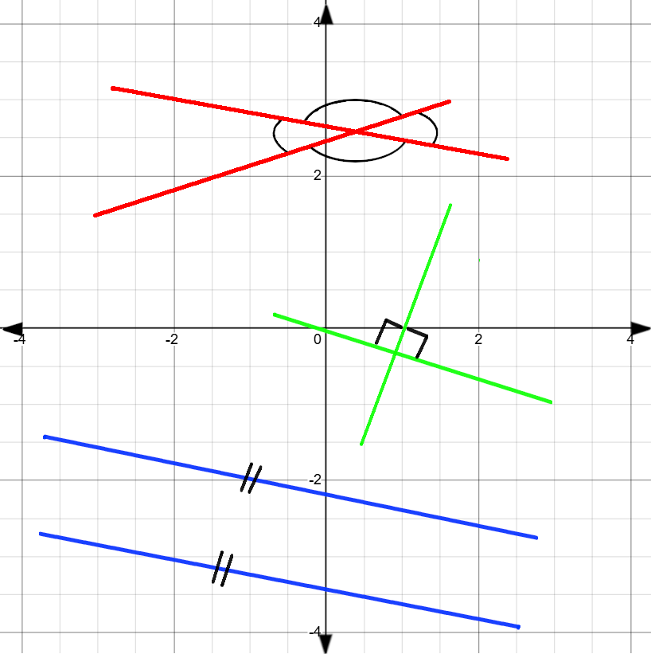
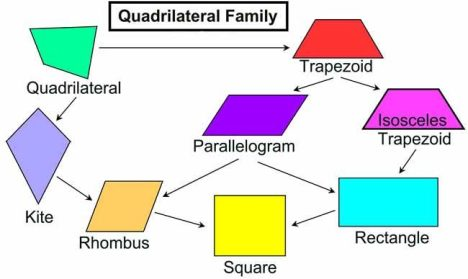

The Cartesian Plane with 4 quadrants.
The Cartesian Plane with 4 quadrants.
If you aren't comfortable with the number line, you better get to it now.
As we learned, the number line is an infinite line which goes from negative infinity to positive infinity, where 0 is located at what we call the origin.
The Cartesian Coordinate System, Cartesian Plane or xy-plane, was introduced by the French mathematician René Descartes in the 17th century. The idea is simple:
We simply take another number line and place it on top of the original number line, however rotated by 90° so that positive infinity is where you'd end up if you went "up" forever, while negative infinity
is down. Call the horizontal number line the x-axis and the vertical number line the y-axis, where the "0" on both axes are at the same place, the origin. Now we can define points in 2D space.
For example, if you move three steps to the right on the x-axis and 4 up on the y-axis, you will end up at a point with coordinates (3 | 4).
We write coordinates as two numbers in brackets separated by a vertical line (or comma, but that is not advised). The first number, called the abscissa, is going to be the distance along the x-axis, whereas the second number,
after the separating line, called the ordinate, is how far you went along the y-axis. For the x-axis, positive means to the right and negative to the left. For the y-axis positive means up and negative means down.
Example: What coordinates do you end up at after moving two units to the left and three units down?
Solution: Moving to the left is negative along the x-axis, while moving down is negative along the y-axis. Your final coordinates would be (-2 | -3).
We can also subdivide the cartesian plane into 4 quadrants, where the first quadrant is the plane which consists of all the coordinates where both the abscissa and ordinate are positive.
The second quadrant is all the coordinates where the x-coordinate is negative but the y-coordinate is positive. For the 3rd quadrant both coordinates are negative, and for the fourth
the x-coordinate is positive but the y-coordinate is negative. To remember this easily, start from the positive x-axis and move counter-clockwise. The first plane you
enter is the first quadrant. Every time you cross an axis you enter the next quadrant. Try this mental trick yourself!
Although the basic geometry I will be covering in the next few sections doesn't necessitate a coordinate system, doing geometry on a coordinate system can be very useful/helpful and is a branch of mathematics
called analytical geometry, which will follow you on your math learning journey. Let's investigate some simple geometric shapes and properties.

Two lines intersecting in red; Two perpendicular lines in green;
Two parallel lines in blue
There are three types of lines: lines, rays and line segments
(or just lines [don't think about it too much]).
A line is a line, which has no endpoints, meaning it extends infinitely in both directions. Thus, if placed on the coordinate plane,
the line would never end if you walked along it, in either direction.
A ray is a line which has one endpoint but extends infinitely in the other direction, like a ray. Lastly, a line segment is a line with two fixed endpoints
and a finite length. This last one is the most common, and I'll just refer to them as lines, while I'll refer to infinite lines as just that.
Next let us consider angles. Angles describe rotation but also how "aligned" two lines are. The unit for an angle you most commonly work with is the degree,
which is defined as 1/360th of a full rotation. In other words, 360° is a full rotation. We can also describe the angle between two lines at their intersection point as how far you'd have to
rotate to go from looking at one line to looking at another.
If you have a line in any sort of way and another line which intersects the first line in such a way that it makes 90° angles with the line it's called a perpendicular
to the first line. We draw 90° angles as either you would a normal angle but with a dot inside of it or as a part of a rectangle.
If you have two infinite lines and they never intersect each other, or if they aren't infinite and you extend them infinitely and they never intersect
each other, then the two lines are parallel to each other. We note that two lines are parallel by drawing two
perpendicular lines on each of the two lines which are parallel to each other. On the right you can see an image showing two lines forming angles with each other,
two lines perpendicular to each other and two parallel lines.

The types of quadrilaterals.
The most basic shape we can construct with lines is the triangle, which is simply three lines put together such that they enclose an area. A three sided shape.
Furthermore, a four sided shape is called a quadrilateral. Quad coming from Latin meaning four and later/latus means side. A square, which is a shape with 4 equal sides, and a rectangle,
where the opposing sides are of equal length, are both quadrilaterals. For both the square and the rectangle the angles inside the shapes respectively are each 90° and add up to 360°.
Besides these two most common quadrilaterals, there is also the rhombus, which has 4 equal sides and angles whose opposites are equal, the kite, which has two
adjacent equal sides, the parallelogram, two pairs of parallel sides, the isosceles trapezoid, or trapezium, which has exactly one pair of parallel sides. If a four sided shape doesn't
fit the description for any of these, it is an irregular quadrilateral.
Shapes with 5 sides are called pentagons and shapes with 6 sides are called hexagons.
Lastly, there is a shape with one line, however it isn't straight, rather curved to form a loop. That is the circle.
The circle is defined such that every straight line from the so-called origin of the circle (yes, the origin as in relating to the coordinate system and the
central point of a circle are both called origin) to the circumference of the circle has the same length. The most crucial and fundamental of these shapes will be
studied in detail in the next sections.
\( \begin{array}{l} & 6.) \text{2nd quadrant} & \\ & 7.) \text{4th quadrant} & \\ & 8.) \text{3rd quadrant} & \\ & 9.) \text{Between the 1st and 4th quadrant} & \\ 5.) \text{1st Quadrant} & 10.) \text{Between the 2nd and the 3rd quadrant} & \\ \end{array} \)